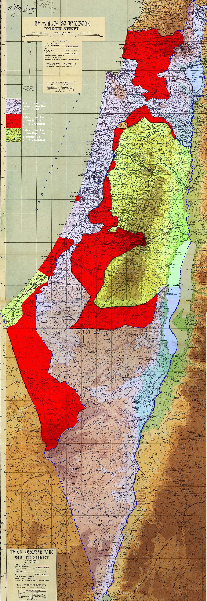

Objectif : décomposer les nœuds du conflit en exposant chaque position sans en hiérarchiser aucune — la clé de lecture des négociations et de leurs impasses.
Comprendre le conflit ne suffit pas ; il faut voir la mécanique du blocage. Chaque point dur relie trois niveaux : un droit invoqué (autodétermination, sécurité, retour, propriété), une peur concrète (État morcelé, perte de majorité, violence, dépossession), et un fait accompli sur le terrain (colonies, murs, statuts). D’où les quatre compétences du chapitre (doc. de travail) : comprendre les revendications fondamentales et leurs tensions ; identifier les peurs et besoins sous les positions ; voir pourquoi des solutions écrites sur papier deviennent impossibles ; et disposer d’une grille pour lire les accords — Oslo, Camp David, Genève — sans se limiter aux annonces.

Jérusalem superpose trois conflits : territorial (frontière de 1967 à l’Est), juridique (annexion de 1980 jamais reconnue — les 200 000+ Palestiniens de Jérusalem-Est sont résidents, pas citoyens), et religieux (le mont du Temple / esplanade des Mosquées — lieu le plus saint du judaïsme, troisième de l’islam ; le statu quo des lieux géré depuis 1967 s’est érodé depuis 2000 et les visites accrues de non-musulmans depuis 2023-2025 alimentent la tension récurrente (doc. de travail ; presse 2023-2026)). La tentative de résolution la plus aboutie (Genève 2003) proposait d’inventer une souveraineté par couches : souveraineté palestinienne sur les quartiers arabes, israélienne sur les quartiers juifs, « souveraineté partagée » sur le bassin sacré — une idée juridique inédite, jamais négociée officiellement. En 2025-2026, la pression démographique et urbanistique continue : le projet « E1 » (relier Ma’ale Adumim à Jérusalem-Est) couperait la Cisjordanie en deux et isole Jérusalem de la Cisjordanie — le fait accompli urbanistique tranche la question par le béton (Peace Now).
La rés. 194 (1948) prévoit le retour « à tout moment » des réfugiés « désireux de vivre en paix » avec compensation des biens — texte voté, jamais appliqué. La position palestinienne y lit un droit individuel imprescriptible ; la lecture israélienne (et une partie de la doctrine) y lit un droit conditionnel au retour dans l’État palestinien à créer, pas en Israël ; la négociation (Camp David 2000, Genève 2003) a toujours porté sur le même chiffre : combien, sur quelle période, sous quelle sélection — des dizaines de milliers ? des centaines ? Le doc. de travail nomme le mécanisme : la peur du changement démographique entrave la mise en œuvre de droits fondamentaux — et le débat israélien sur « l’État juif » (loi 2018) durcit ce nœud chaque année (doc. de travail). Contexte 2024-2026 : l’UNRWA elle-même est devenue l’enjeu — loi israélienne interdisant ses activités (déc. 2024, effective mars 2025), accusations de 12 employés du 7-Octobre (enquête FOX/ONU), coupes de financements, et un programme de distribution alternatif contesté (GHF, mai 2025) — le statut même de l’agence qui certifie la qualité de réfugié est attaqué (ONU ; presse 2024-2026).
Les colonies ne sont pas un point dur parmi quatre : elles décident des trois autres — du tracé des frontières (les blocs rendent la ligne de 1967 fictive), de Jérusalem (E1 et les ceintures coloniales vident la ville de son Est palestinien), et du retour (les terres des réfugiés de 1948 sont souvent sous les colonies — le retour matériel est devenu objectivement impossible sur une part des sites). Depuis 2023-2026, l’accélération est documentée : autorisations de dizaines de milliers d’unités, légalisation d’avant-postes, 22 nouvelles implantations approuvées en 2025, et la relance officielle d’« E1 » (Peace Now ; doc. de travail). La question politique posée par le chapitre : un fait accompli suffit-il à créer un droit ? — la réponse du droit international est non (ch. 7) ; la réponse du terrain est la question du siècle.
| Point dur | Non-négociable palestinien | Non-négociable israélien | Zone de compromis possible |
|---|---|---|---|
| Frontières | La ligne de 1967 comme base | Pas de retour intégral ; sécurité de la vallée | Échanges mineurs et équivalents (formule constante) |
| Jérusalem | Capitale à l’Est | La ville « unifiée » ; le Mur occidental | Souveraineté par couches ; « ville ouverte » |
| Réfugiés | Le principe du droit (194) | Pas de retour massif en Israël | Retour limité + compensation + État palestinien |
| Colonies | Démantèlement (illégalité) | Les grands blocs | Échange des blocs contre territoire équivalent |
La lecture croisée révèle le mécanisme : chaque case « compromis » existe sur le papier depuis Camp David 2000 — et chaque case touche, vue de l’autre côté, un noyau dur : pour les Israéliens, la démographie et la sécurité ; pour les Palestiniens, le retour et la souveraineté réelle. C’est pourquoi les accords partiels (Oslo) fonctionnent tant que le noyau n’est pas touché — et explosent dès qu’on l’approche (doc. de travail ; ch. 10).
Espace de travail : cette page est le dossier vivant du chapitre — brouillons, activités, sources et repères s’y accumulent, séparément de l’index. Les attributions entre parenthèses dans le texte renvoient aux entrées ci-dessous.
Documents de travail (Drive) — « 9. Les points clés qui bloquent une solution politique.docx » (document de base de ce chapitre) · « 250407_bibliographie_Pal-Isr.docx » (bibliographie générale de l’équipe) · « 250701_dates clés_ISRAPAL.xlsx » · « 250701_Lexique_ISRAPAL.docx » · dossier racine « 2026_Outil péda_Israël-Palestine ».
Résolutions — A/RES/181(II) partage (1947) · A/RES/194(III) réfugié·es (1948) · S/RES/242(1967) retrait des territoires (1967) · S/RES/476(1980) Jérusalem (1980) · S/RES/478(1980) annexion de Jérusalem déclarée nulle (1980) · A/RES/2334 colonisation (2016) · A/RES/67/19 Palestine, État observateur (2012).
Jurisprudence — affaire 143 — avis « Mur » (2004), Jérusalem-Est comprise · affaire 186 — avis du 19 juillet 2024 (colonies, ressources, fin de l’occupation).
Références — Geneva Initiative (2003) — projet détaillé de statut final (jeune-palestine.org ; geneva-accord.org) · paramètres Clinton (2000) ; initiative arabe de paix (2002) · UNRWA — registre des réfugiés et mandat (unrwa.org) · Peace Now — cartographies de la colonisation (peacenow.org.il) · OCHA — zones A/B/C · initiatives citoyennes bilatérales (voir chapitre 11).
Actualité 2024-2026 — vague de reconnaissances de l’État de Palestine (sept.-oct. 2025 : France, Royaume-Uni, Canada, Belgique, Australie, Portugal, etc.) · plan américain de 20 points sur Gaza (oct. 2025) · loi israélienne contre l’UNRWA (déc. 2024) · projet « E1 » relancé (2025) · 22 nouvelles implantations approuvées (2025).